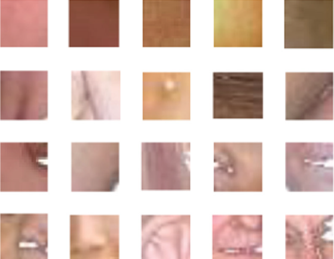
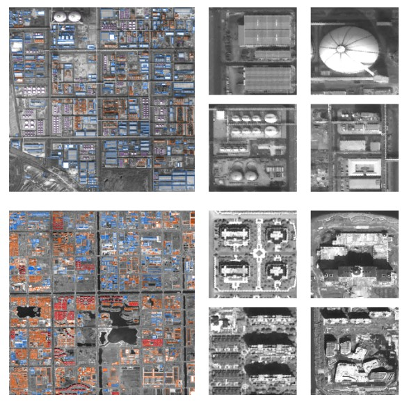
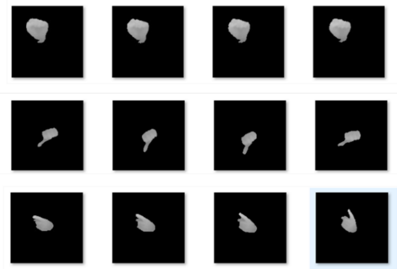

|
IRIP-SKINPATCH
|
 |
The IRIP-SKINPATCH dataset is derived from ECU dataset and Compaq dataset. The Compaq dataset provides explicit nonskin images, while its ground truth data are less precise
than samples in ECU. Thus, skin patches are randomly cropped from skin regions in ECU, and nonskin patches are selected from nonskin images of Compaq. The IRIP-SKINPATCH is
classified into two subsets according to the patch sizes, i.e., 20 × 20 and 10 × 10. The image patches in each subset have been randomly divided into a training subset and testing subset. The amount of patches in the dataset is greater than 1.5 million.
More detailes can be found in our paper Patch-wise skin segmentation of human body parts via deep neural networks(PDF).
|
BUILDINGS
|
 |
Buildings dataset is constructed via manually annotation based on GaoFen satellite, which images are with high spatial resolution. In our work, the building categories are divided into house buildings, factory buildings and other buildings, etc. Compared with existing annotation methods, the proposed annotation process is more efficient and accurate, because we annotate panchromatic images with high spatial resolution, and then fuse panchromatic and multispectral images. The traditional annotation process is divided into two parallel sub-processes, i.e., fast panchromatic image annotation and multi-spectral image fusion.
Buildings now consists of three distinct categories building categories, i.e., house buildings, factory buildings and other buildings. The number of categories continues to increase. The dataset contains more than 10,000 images. The spatial resolution of sample images is less than 1 meter, which covering various types of buildings on the mainland. Images under various conditions of different weather, seasons and imaging conditions are selected for buildings annotation. Sample images of Buildings have the characteristics of large-scale, multi-scale, intra-class diversity and inter-class similarity in terms of building. Although existing remote sensing datasets contains more scenarios, the number of samples cannot meet the needs of model training for CNN based target detection or classification. To the best of our knowledge, the Buildings dataset proposed in this paper is the largest high-resolution remote sensing dataset for building detection.
(BUILDING_SAMPLES FOR PAPER SUBMIITED TO ICIP2020, MORE INFORMATIONS PLEASE EMAIL TO: xutao@ujn.edu.cn)
|
UJN-3M-HANDS
|
 |
Large-scale dataset is necessary for training of deep neural network-based hand gesture classification models. According to the requirements of human-interaction in virtual reality-oriented teaching environment, a large-scale depth-based hand gesture dataset was proposed. The dataset, named UJN-3M-HANDS, contained more than 3 million depth gesture samples.
There are 17 static gestures and 34 dynamic gestures in UJN-3M-HANDS. Some static gesture samples were demonstrated in Figure. Compared with other data sets, UJN-3M-HANDS proposed is designed for specific teaching application scenarios, and the categories of gestures are consistent with those used in experimental teaching. In the stage of gesture collection, the distance between the camera and the collector is set to more than 2 meters. The advantage of UJN-3M-HANDS is that the gesture samples were acquired from 2000 individuals, while there are many replication samples in other datasets.
|
|